| Home Reporting A Judge’s Charge Dupraw’s Notes Sklarew’s Notes Zoubek’s Notes Pre-Anniversary Description Reference Material Brief Form List Anniversary Description Reading Material Reference Material Brief Form List Most-Used Phrases Simplified Description Brief Form List Dupraw on Note Size Diamond Jubilee Description Brief Form List Expert Brief Form List Series 90 Description Brief Form List Centennial Description Brief Form List Taquigrafía Gregg Gramálogos German Gregg Manual Esperanto Gregg Manual Brief Forms Irish Gregg Manual Gregg Group Gregg Learning Forum Ms. Letha’s SH Site Shorthand³ Omniglot's Entry Wikipedia's Entry Stenospeed Dictation Practice Andrew Owen |
47. Word-Sign Derivatives
In certain word-signs and a few other
words the S of the genitive is joined in a special way—Namens
and Hauses are examples. 48. Word-signs may be freely joined to prefixes and to other words to form compounds. When the joinings are not good the two parts are written close together. The following are examples: 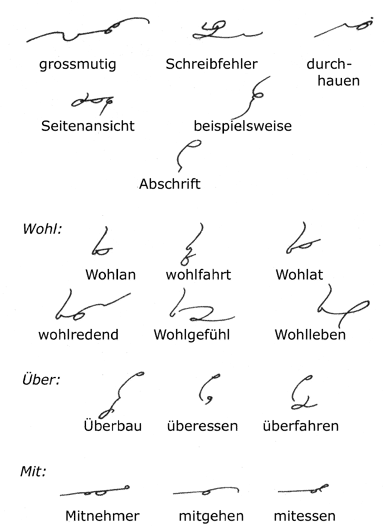 MIT is represented by MI when followed by a consonant, but it is written in full if a vowel follows. 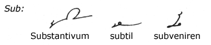 SUB is represented by S; if followed by S it is written to form an angle with it, that is to say, the blend is not used. 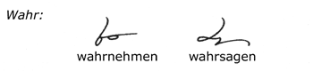 The word-sign form for WAHR is retained in compound words only when the reversing principle properly applies. So that in such cases as wahrsagen the prefix word is written in full. 49. The Syllable GE 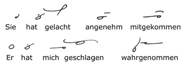 50. Phrases 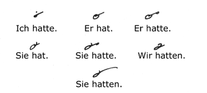 The above phrase forms are of such frequent occurrence that they should be very carefully practiced. 51. Comparative And Superlative Adjectives 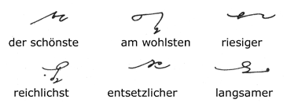 From Paragraph 45 we already know how to write the final syllable ER. Above are a few examples of the comparative degree of adjectives. The superlative is represented by ST. These syllables (ER, EST) are disjoined when following LICH. 52. LT and LD 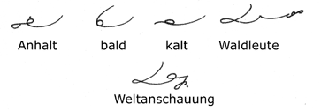 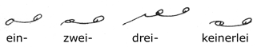 The ER syllable is omitted. 54. Omission of D 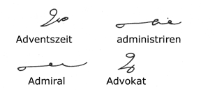 55. Final IN 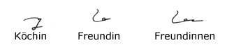 The final syllable IN of (feminine) nouns is written in full, and the second N for the plural is shown by the "jog." 56. "Round numbers" can be written very rapidly, as follows: 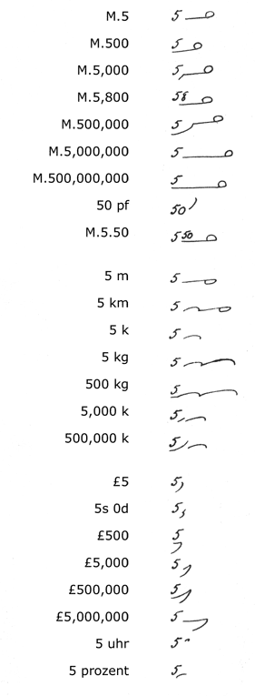 57. Days and Months 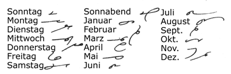 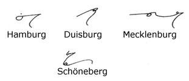 The suffix BURG in place names and surnames is represented by B; BERG is written in full, the R practically getting lost in the writing of the G. 59. LOS, BAR, and HEIT 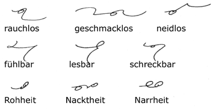 LOS is represented by L, BAR by B, HEIT by the I vowel. - Next Page - |

|
Preface About Gregg Shorthand Editor's Note A Talk with the Beginner The Alphabet Chapter I Unit 1 Unit 2 Unit 3 Chapter II Unit 4 Unit 5 Unit 6 Chapter III Unit 7 Unit 8 Unit 9 Chapter IV Unit 10 Unit 11 Unit 12 Chapter V Unit 13 Unit 14 Unit 15 Chapter VI Unit 16 Unit 17 Unit 18 Chapter VII Unit 19 Unit 20 Unit 21 Chapter VIII Unit 22 Unit 23 Unit 24 Chapter IX Unit 25 Unit 26 Unit 27 Chapter X Unit 28 Unit 29 Unit 30 Chapter XI Unit 31 Unit 32 Unit 33 Chapter XII Unit 34 Unit 35 Unit 36 |